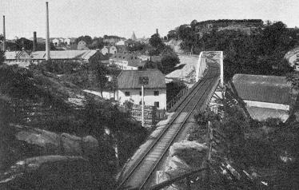
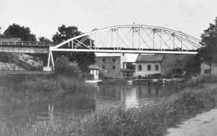

Södermalm i tid och rum. Stockholm
Ur Stockholmsliv, Staffan Tjerneld, 1950
Av stadens »fåfängor» - Paschens vid Bellevue, Westmans vid Sabbatsberg, Titzens på Skinnarviksbergen - tog Danvikens fåfänga utan vidare priset. Området hade från början tillhört hospitalet och en bit upp på berget låg Danviksförsamlingens klockstapel, men direktör Lundin lade sig till med praktiskt taget hela berget.
1700-talstraditionerna höll sig i fortsättningen vid liv ovanligt länge uppe på Fåfängan, under 1880-talet ägdes berget av den skotske köpmannen James Paton och därefter inträdde familjen Funch som ägare.
Fåfängan var ett verkligt paradis på 90-talet har en gammal dam berättat, som tillbringade sin barndoms somrar i Bergshyddan, villan strax öster om krönet. Man nådde huset från Danviksgatan på en trappa med 195 steg, men man blev belönad för besväret inte bara av den osedvanligt vackra utsikten. Kring villan fanns nämligen en trädgård med rosor och fruktträd och i skrevorna på berget växte smultron. Floran var överraskande rik häruppe; då familjens döttrar på midsommarnatten tysta smög ut i sina nattlinnen för att samla de nio olika blommorna att lägga under huvudkudden behövde de inte gå långt. En botanisk inventering av Fåfängan som gjorts på 1940-talet visade för övrigt en stor artrikedom.
|
  Saltsjöbanan över Hammarbysjön från öster med Fåfängan i bakgrunden och Liljeholmens ljusfabrik till vänster. 1896 Saltsjöbanan över Hammarbysjön från öster med Fåfängan i bakgrunden och Liljeholmens ljusfabrik till vänster. 1896
Att detta underbara monument över 1700-talets leklynne skulle få stå orört i framtiden är dock föga troligt, den planerade Österbron mellan Söder och Beckholmen kommer säkert att svårt inkräkta på idyllen. Och skulle bron mot förmodan bli en tunnel är det fara värt att en ny trafikled över Danvikskanalen tar ytterligare mark från Fåfängan. Om nu inte Fåfängan får en höghusbebyggelse av samma förintande slag som Klippans, berget på andra sidan kanalen. Men ännu kan stockholmarna likt herrarna Lundin och Paton sitta på Fåfängan i varma sommarkvällar och njuta av en utsikt som praktiskt taget når horisonten runt. |
Fortfarande har ju Fåfängan kvar sin karaktär av svävande lustgård, även om berget på olika håll
naggats i kanten. Saltsjöbanan skar, i början av 90-talet ett stycke av den södra sluttningen, medan
det nordliga stupet mot Saltsjön successivt flyttats inåt genom sprängningarna för den nya kajen, så
att den gamla villan nu står och balanserar över avgrunden.
1908 var Fåfängan utsatt för ett svårt hot i form av ett privatprojekt som gick ut på att förvandla den till ett Akropolis med utsiktstorn, terrasser, hiss, restaurang och café, en plan som lyckligtvis aldrig utfördes.
  Vid Saltsjöbanans nya bro möttes en vassig vik av Hammarbysjön och det gamla Danvikshospitalets bybyggelse. Värmdövägen följde stranden runt viken. 1896 Vid Saltsjöbanans nya bro möttes en vassig vik av Hammarbysjön och det gamla Danvikshospitalets bybyggelse. Värmdövägen följde stranden runt viken. 1896
|